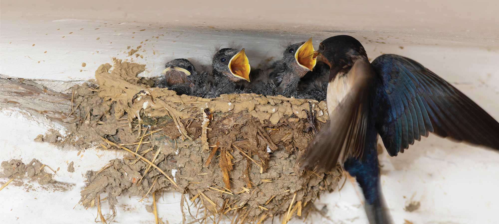

SEJARAH SARANG BURUNG WALET
Burung walet memiliki sayap yang meruncing dan dapat membuat sarang dari air liurnya dalam waktu kurang lebih 8 minggu. Biasanya, burung walet akan membuat sarang di tempat yang jauh dari keramaian seperti di langit-langit goa ataupun di atas gedung yang tinggi. Hingga saat ini, sarang burung walet seringkali dimanfaatkan untuk berbagai macam kebutuhan seperti kesehatan dan kecantikan. Diantaranya adalah mampu mengobati penyakit batuk, influenza, menjaga stamina tubuh, hingga menjaga elastisitas kulit supaya terlihat awet muda...Baca selengkapnya >>>>>

MANFAAT-MANFAAT SARANG WALET
1. Manfaat Untuk Kesehatan
a. Memperkuat Sistem Kekebalan Tubuh
Sarang burung walet mengandung mineral yang baik untuk menjaga kesehatan tubuh. Selain itu, kadar antioksidan yang tinggi membantu untuk melawan radikal bebas...Baca selengkapnya >>>>>

Walaupun tidak berkicau merdu seperti burung lainnya,burung Walet justru dapat meraup untung ratusan juta rupiah.Semua ini didapat dari air liur burung Walet yang bisa berubah menjadi sarang burung Walet, Kalau sudah berbentuk sarang burung Walet,maka uang akan datang sendiri.Bahkan orang-orang dimancanegara akan berburu sarang Walet untuk bahan pengobatan...
Baca selengkapnya di Burungnya.com >>>>>
15 Fakta Menarik Tentang Burung Walet
Walaupun tidak berkicau merdu seperti burung lainnya,burung Walet justru dapat meraup untung ratusan juta rupiah.Semua ini didapat dari air liur burung Walet yang bisa berubah menjadi sarang burung Walet, Kalau sudah berbentuk sarang burung Walet,maka uang akan datang sendiri.Bahkan orang-orang dimancanegara akan berburu sarang Walet untuk bahan pengobatan...
Baca selengkapnya di Burungnya.com >>>>>